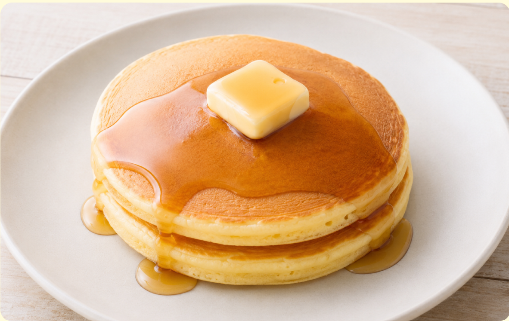
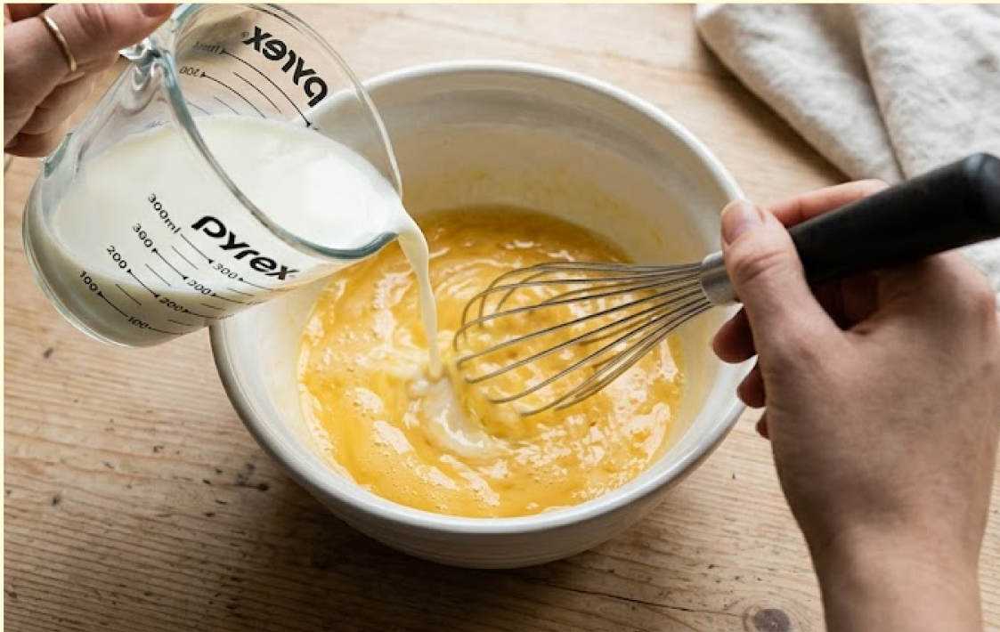
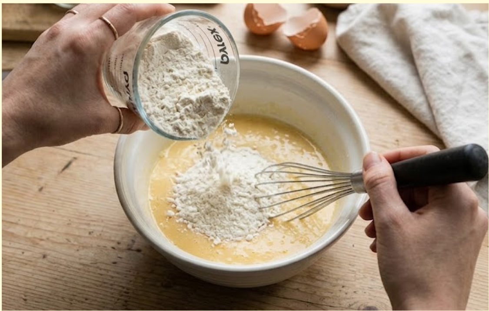
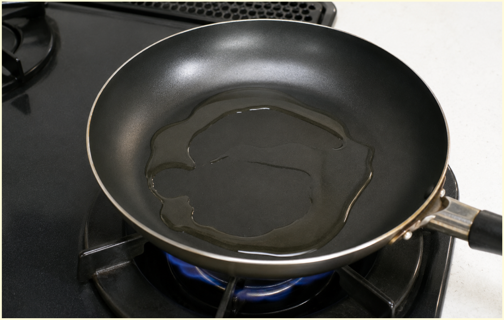
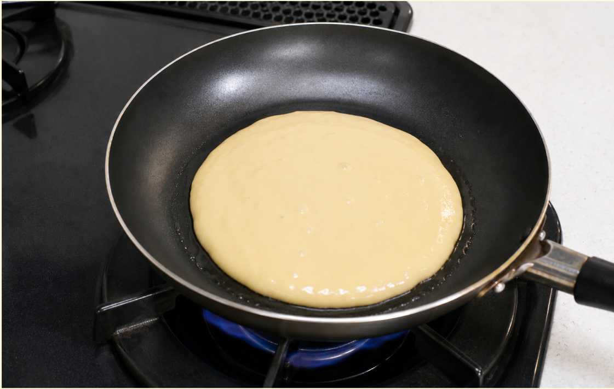
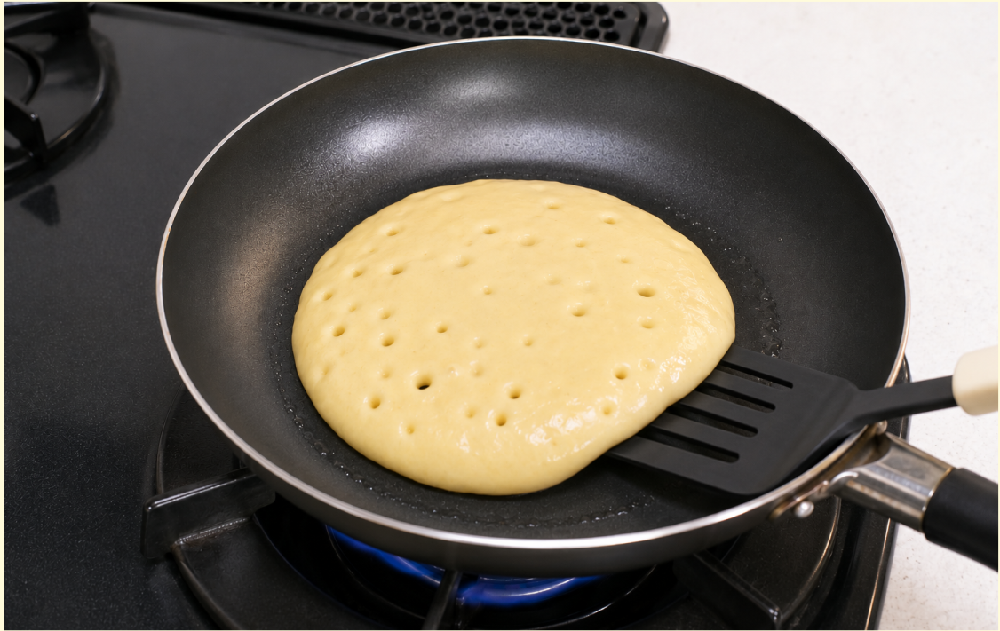
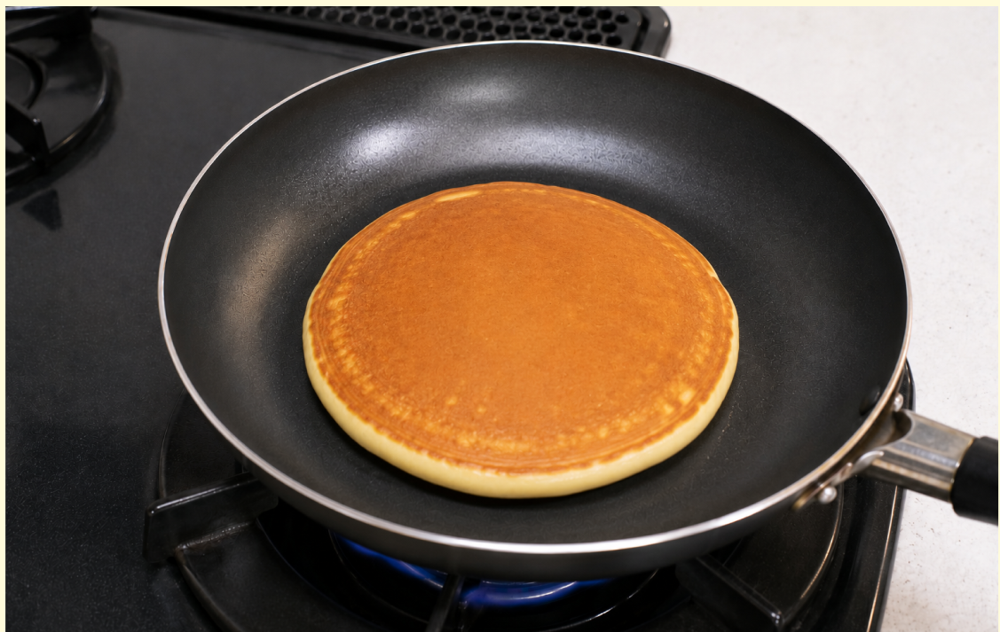

難易度2
★★☆
材料（一人分）
- ・ホットケーキミックス100g
- ・卵1個
- ・牛乳70ml
- ・サラダ油またはバター少量
- ・はちみつ、バターなどお好みで
必要な道具
- ・ボウル
- ・泡立て器
- ・フライパン
- ・フライ返し
- ・計量カップ
- ・濡れ布巾
注目ポイント
- 🔥 火加減注意
- 💡 アレンジしても◎
作り方
① ボウルに卵を入れてよく溶き、計量カップで量った牛乳を加えて混ぜます。

② ホットケーキミックスを加え、粉っぽさが少し残るくらいで混ぜるのをやめます。

③ フライパンを中火で温め、サラダ油またはバターを薄く引きます。その後、ぬれ布巾の上に置いて温度を少し下げます。

④ 弱火にして、生地をフライパンの中央へ流し入れます。

⑤ 表面にポツポツ穴が出てきたら、フライ返しで裏返します。

⑥ 裏返したら弱火で2〜3分焼き、中まで火が通ったら完成です。

調理のコツ
生地は混ぜすぎると固くなってしまい、
ふんわり焼けにくくなります。
強火にすると中心が生焼けになりやすいです。
アレンジ
バナナを薄切りにしてのせると、
バナナホットケーキになります。
チョコチップを加えると、
おやつ感のあるホットケーキになります。
ヨーグルトを少し加えると、
しっとりした食感になります。